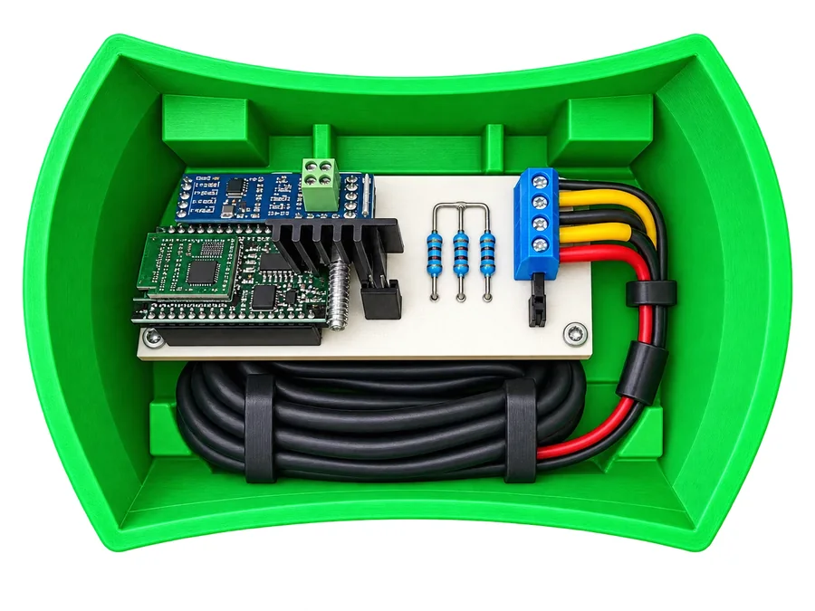

DEMOSTRACIÓN EN VIVO
De un punto en el mapa a una decisión
Marcar la parcela
Leer el suelo
Comparar rotaciones
Elegir un año malo
Preguntar y ajustar
Rotación actual
🌽🌽🌽
23
de 45 temporadas fallan
Mejor alternativa
🫘🫘🌱
9
de 45 temporadas fallan
Nuestro nodo prototipo, sobre la mesa


ESP32 · sensor NPK por RS485 · Firebase
Respaldo: si falla la red, la web usa una respuesta real guardada y se reproduce el video de la animación.RotaHalcón · 5 / 7